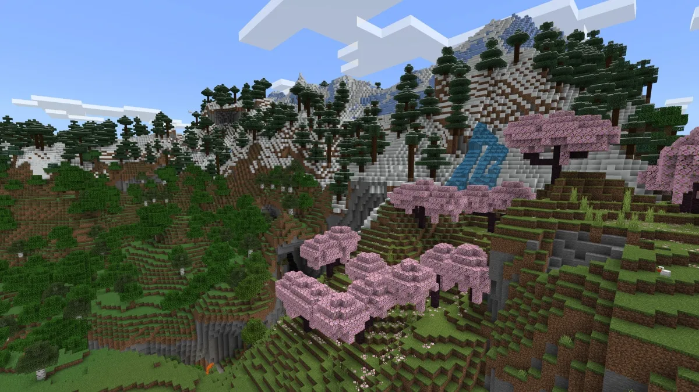

모드를 찾는
새로운 방법.
여러 출처의 게임 모드를 한곳에서.
발견부터 비교, 원본
사이트로의 이동까지.
소개할
이야기.
흩어진 모드,
하나의 검색.
게임을 고르면
지원하는 출처를 함께 탐색합니다.
검색·필터 지원 범위는 게임과 출처에 따라 다릅니다.
취향에 맞는 모드에
더 가깝게.
게임과 조건
게임 · 장르 선택
버전 · 로더 필터
검색과 비교
등록된 한글 검색어 치환
즐겨찾기 · 모드 비교
원본으로 이동
상세 정보를 확인하고
원본 사이트에서 계속
역할에 맞춘 기술 선택.
React
화면을 컴포넌트로 나눠 재사용
Vite
빠른 화면 개발과 웹 빌드
Tauri
같은 웹 UI를 Windows·Android 앱으로
Wrangler
Workers 로컬 검증과 배포를 한 도구로
Zod
외부 API 데이터를 스키마로 검증
tsx
TypeScript 서버·스크립트를 바로 실행
Kotlin
Tauri의 Android 실행부 연결
Fastify
로컬 API에 라우팅·CORS·요청 제한
하나의 UI, 공유하는 검색 로직.
React 19
TypeScript · Vite 7
CSS · WebGL
Cloudflare Workers
공유 API · 출처별 어댑터
Zod 4 데이터 검증
모드 플랫폼
출처별 검색 요청
결과를 공통 형식으로 변환
웹에서도, 앱에서도.
Web
브라우저에서 바로 탐색.
Cloudflare Workers가 화면과 API를
제공합니다.
Windows · Android
Tauri로 같은 UI를 앱에 담고,
HTTPS API에 연결합니다.
개인 기록은 기기에 저장하고, API 키는 서버에서 관리합니다.
당신의 게임에,
새로운 가능성을.
찾고, 비교하고, 기억하는 모드 탐색.
Mod Finder 열기↗